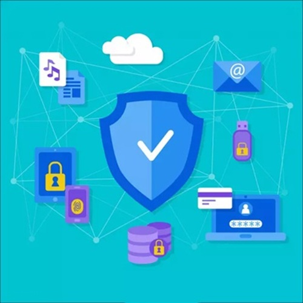

Proyectos y Certificaciones | Cybersecurity of Google
Certificación Oficial en Ciberseguridad de Google. Proyectos basados en estándares de la industria (NIST) y prácticas técnicas (Python, SQL, Linux).
ASIR - Administrador de Sistemas Informáticos en Red
Estudiante en PROMETEO FP Oficial
Grado Superior y Máster en Ciberseguridad
¡Hola! Soy Gabriel Ternero, estudiante de PROMETEO FP, Grado Superior 100% Oficial y Homologado. Actualmente estoy formándome en Administración de Sistemas Informáticos en Red (ASIR) y he complementado mis estudios con cursos en áreas clave como ciberseguridad, inteligencia artificial, análisis de datos, liderazgo y productividad.
Me considero una persona perseverante, orientada al aprendizaje continuo y con una visión muy práctica de la tecnología. Mi experiencia diversa me aporta algo que valoro mucho: la capacidad de entender los problemas desde distintos ángulos, comunicarme con claridad y trabajar con compromiso real.
Soy un apasionado de la tecnología y la seguridad informática con una trayectoria muy singular. Me inicié en el sector IT en los 90 (soporte, redes y programación) y gestioné mi propio emprendimiento tecnológico antes de emigrar a España.
Tras una etapa de maduración profesional en sectores de alta exigencia y atención al cliente —donde desarrollé una fuerte ética de trabajo y lealtad—, he retornado a mi verdadera vocación actualizando mi perfil técnico al 100%.
Actualmente, estoy enfocado en la Ciberseguridad y la Administración de Sistemas, complementando mi formación reglada con certificaciones en IA, Análisis de Datos y Respuesta a Incidentes.
¿Qué ofrezco? La curiosidad técnica de siempre, sumada a la fiabilidad, la disciplina y la capacidad de gestión que solo te da la experiencia vital. Mi objetivo es integrarme en un equipo de Blue Team o soporte especializado donde pueda crecer, proteger activos digitales y demostrar que la actitud y la perseverancia son las mejores herramientas de defensa.
He trabajado en varios proyectos relacionados con la monitorización, copias de seguridad, actualización de sistemas y ciberseguridad, aplicando conocimientos teóricos en situaciones prácticas.
Certificación Oficial en Ciberseguridad de Google. Proyectos basados en estándares de la industria (NIST) y prácticas técnicas (Python, SQL, Linux).

Desarrollo de scripts en Python y PowerShell para la monitorización del estado del hardware de un ordenador.

Desarrollo de scripts de respaldo automatizado en Linux, eliminando el error humano, garantizando la consistencia de los datos y automatizando procesos.

Implementación de una arquitectura de seguridad robusta (UTM, NIDS/HIDS) y segmentación mediante VLANs para minimizar la superficie de ataque.

Análisis de vulnerabilidades (OWASP Top 10), inyección SQL y XSS. Reducción del 90% en riesgos de exposición críticos.

Creación y despliegue de políticas PSI, gestión de contraseñas, control de acceso y Plan de Respuesta a Incidentes (PRI).
Puedes contactarme rellenando el siguiente formulario:
P.D.: Estoy abierto a nuevas oportunidades de colaboración y aprendizaje, contáctame para discutir posibles proyectos o intercambiar ideas.